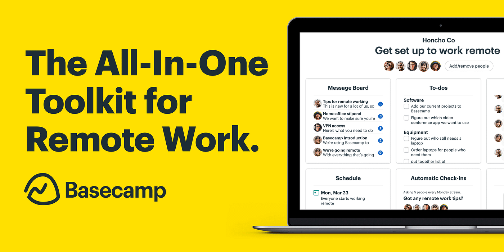

Oct 14, 2020
Developers sharing ....

What is this thing that in front of a developer will most likely make him share it with another developer.
This should be so interesting for them to share it that they will do. They will share if they gain something like money, trust, connections, skills, influence, jobs....
For the case of the platform about live pair programming and team working it is mainly about gaining connections and skills and may be jobs.
Are you willing to work for company that is 100% remote. A company that let’s you work where you want and when you want. Me yes dont know for you. This is the future of work but lot of company dont believe in this because they just don’t have any example of success in working with people in team and remotely. We build a platform that let us show them this is possible for people to do things efficiently in remote environment. We built this platform that help developer learn to work better in remote with people from all arround the world. We let them show to all the companies they are seeking to work with that they are ready for remote team based tasks. That they can ship software in this configuration and even smarter and faster. This is the purpose of this platform that connects with your peers arround the world for make things done and showing yovrvebodhvthat it is possible and you can because you just did it.